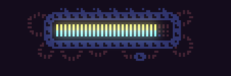
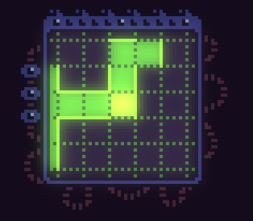
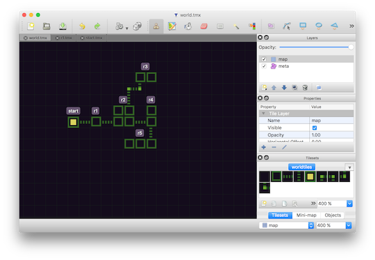

Spooky Pooky #43 - We All Love UI
Biting the bullet and getting a UI up and running.
Published on 26 Feb 2016 by Joe
I began the week doodling some UI elements, which was surprisingly fun.
I came up with a health / damage indicator bar ..

.. and a minimap ..

Both of these use masks to render their contents with a bit of a glow which gives it a nice pseudo-sci-fi look.
After doodling the minimap I came to the interesting conclusion that I had absolutely no way of actually rendering it. Until now each room in the game is a separate Tiled file and I link them together with some properties in the exit objects that get triggered when you collide with them. This kind of worked ok, but there was no over-arching structure that could be viewed. It also means that getting a feel for the world whilst designing it was tricky.
So, I've implemented a world map that describes how rooms in the game fit together which can then also be used as the player explores to construct the minimap.
To do this I use a single Tiled file with a special tileset for describing rooms and connections:

The squares tiles are cells (roughly a screen-sized area) that join together to form rooms. I use the connector tiles to join the rooms together.
I then use an object layer to define rectangular regions on top so that I can give rooms a name, and potentially other properties.
In the game I load in this world file at startup and parse the Tiled data to construct an in-memory graph structure of rooms.
Each room Tiled file then contains exit entities (just rectangular Tiled objects) that correspond to left/right/up/down connectors from the world map.
So far it's working out quite nicely. As the driving force between the Tiled world map are the objects I can mess around with the structures quite freely. It is a bit odd, using a tile editor to design a graph like structure but it appeals to me.
The only snag I've hit so far is that if I want to display the minimap like I have, where rooms are directly adjacent to each other in a grid-like structure, then I need to be careful how I arrange them with connectors in the world map, as it's possible to create overlapping room cells.
I could actually display the minimap in a similar way to the source map with connectors and all; can't quite decide - as a player I think it might be more useful to have the compact view that the current minimap design portrays.